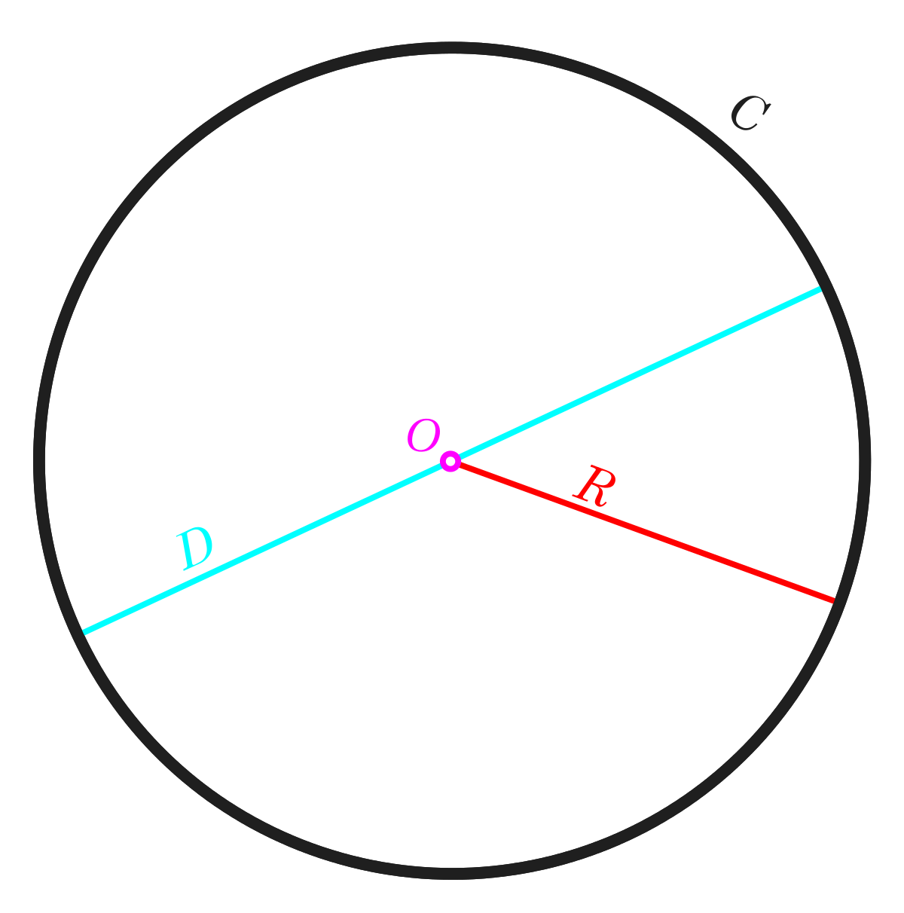

Периметър е число, което е сума от дължините на страните на фигура. Стандартното означение за периметър в математиката е с буквата P.
Нека дължината на страната на квадрата е a. Квадратът има 4 равни страни т.е. P = a + a + a + a или:
P = 4 * а
Упражнение №1
Задайте стойност на страните на квадрата (цяло число от 1 до 7) и вижте как се променя той и как се променя периметъра му.
a = P =
Ако дължината на страните на правоъгълник са a и b. Дължината на всичките му страни е P = a + b + a + b или:
P = 2 * a + 2 * b
Ако диеметрът на окръжност е d, то радиусът му е r = d/2. Дължина на окръжността, означена с C, е диаметърът умножен по π = 3,14159265359 или:
C = 2 * r * π
Задача №1
На коя фигура периметъра е по-голям? На квадрат със страна 5 см. или на правоъгълник със страни 2 см. и 7 см?
Задача №2
Ако едната страна на правоъгълник е 5 см и периметъра е 20 см, колко е дължината на другата му страна?